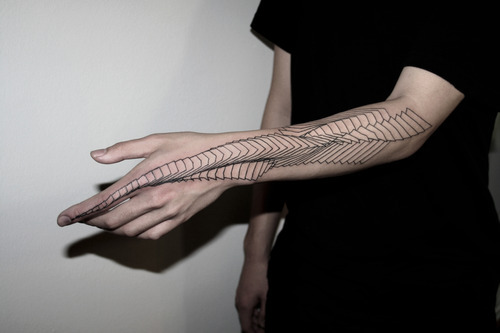

- Estudiantes Del Arte
Animación 'Hand Rings'

Artista: Taro Okamoto

Animación 'Lost'


Animacion 'Hand Rings'
En la animación 'Hand Rings', los artistas manipulan anillos que están diseñados y pintados con gran detalle para representar diferentes personajes, objetos y entornos. Utilizando movimientos precisos y coreografías cuidadosamente planeadas, los animadores dan vida a estos anillos, creando ilusiones ópticas que engañan al ojo y crean la ilusión de movimiento.
Artista: Homero Botet
Animacion 'Lost'
En la animación 'Lost', los artistas utilizan técnicas de animación para crear una experiencia visual cautivadora y enigmática. A través de una combinación de efectos visuales, colorido vibrante y diseño meticuloso, la animación sumerge al espectador en un mundo desconocido lleno de misterio y sorpresa. Cada escena está cuidadosamente elaborada para evocar emociones y transmitir una narrativa sugerente, manteniendo al público cautivado y dejándolos con una sensación de intriga y curiosidad.
Artista: DotsToLines
En la obra de arte del artista del tatuaje DotstoLines, se puede apreciar la notable fluidez de sus líneas, lo que le otorga un estilo distintivo y fascinante. Cada trazo realizado por DotstoLines revela una destreza excepcional y una habilidad para crear composiciones visualmente impactantes.
DotstoLines utiliza esta fluidez en sus diseños para transmitir emociones y contar historias. Las líneas curvas y suaves pueden representar la delicadeza y la suavidad, mientras que las líneas más intrincadas y angulares pueden evocar fuerza y poder. Cada línea se convierte en un elemento clave para expresar la intención y el significado detrás de cada obra de arte del artista.
Sus líneas fluyen sin esfuerzo, como si cobraran vida propia sobre la piel. Cada movimiento del tatuador está cuidadosamente calculado, dando lugar a formas y patrones que se entrelazan con armonía y elegancia. La fluidez de estas líneas crea una sensación de movimiento y dinamismo, como si el diseño estuviera vivo.
Artista: Eduardo Kobra

Mural dedicado a Kurt Cobain y Janis Joplin. Este mural se encuentra en Seattle, ciudad natal de Cobain y también conocida por ser la cuna del movimiento grunge. Kobra logra capturar la esencia rebelde y la pasión musical de ambos artistas en un solo lienzo. El mural muestra a Cobain y Joplin en sus características poses en el escenario, con sus icónicas guitarras y micrófonos. Los colores vibrantes y los trazos dinámicos de Kobra reflejan la energía y la intensidad de su música. Al representar a estos dos músicos legendarios juntos, Kobra rinde homenaje a su legado y nos invita a reflexionar sobre su influencia duradera en la historia de la música rock. Este mural es un recordatorio visual de la pasión y el impacto que Cobain y Joplin dejaron en el mundo de la música.
Eduardo Kobra es un destacado artista conocido por sus obras de arte callejero llenas de color y vida. Una de sus creaciones más destacadas es su mural dedicado a David Bowie. En esta obra, Kobra captura la esencia única y extravagante de Bowie, con su icónica imagen de Aladdin Sane. Los colores vibrantes y los detalles intrincados del mural reflejan la energía y el carisma del legendario músico. A través de su arte, Kobra nos invita a sumergirnos en el mundo creativo y enigmático de David Bowie.

Eduardo Kobra es un renombrado artista brasileño reconocido por sus impresionantes murales y obras de arte callejero que se caracterizan por su estilo vibrante y colorido. Una de sus obras más famosas es el retrato de Albert Einstein, que se encuentra en la ciudad de Nueva York. En esta obra, Kobra captura la esencia del genio científico con una combinación única de formas geométricas y colores llamativos. El mural no solo retrata la imagen icónica de Einstein, con su distintiva cabellera blanca y ojos penetrantes, sino que también incorpora elementos simbólicos que representan las teorías revolucionarias que el científico desarrolló. A través de su estilo distintivo, Kobra logra transmitir la genialidad y la importancia duradera de Einstein como una figura destacada en el mundo de la ciencia.